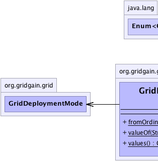
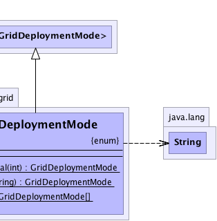

java.lang.Enum<GridDeploymentMode>
org.gridgain.grid.GridDeploymentMode
java.lang.Enum<GridDeploymentMode>
org.gridgain.grid.GridDeploymentMode
|
GridGain™ 3.6.0c
Community Edition |
|||||||||
| PREV CLASS NEXT CLASS | FRAMES NO FRAMES | |||||||||
| SUMMARY: NESTED | ENUM CONSTANTS | FIELD | METHOD | DETAIL: ENUM CONSTANTS | FIELD | METHOD | |||||||||
java.lang.Object
public enum GridDeploymentMode
Grid deployment mode. Deployment mode is specified at grid startup via
GridConfiguration.getDeploymentMode() configuration property
(it can also be specified in Spring XML configuration file). The main
difference between all deployment modes is how classes and user resources
are loaded on remote nodes via peer-class-loading mechanism. User resources
can be instances of caches, databased connections, or any other class
specified by user with @GridUserResource annotation.
Refer to GridUserResource documentation and examples for more
information on how user resources are created and injected.
The following deployment modes are supported:
GridDeploymentMode.PRIVATEGridDeploymentMode.ISOLATEDGridDeploymentMode.SHAREDGridDeploymentMode.CONTINUOUSGridDeploymentMode.SHARED or GridDeploymentMode.CONTINUOUS modes. By default, GridGain will
automatically detect if class-loader changed or a node is restarted. However,
if you would like to change and redeploy code on a subset of nodes, or in
case of GridDeploymentMode.CONTINUOUS mode to kill the ever living deployment, you should
change the user version.
User version is specified in META-INF/gridgain.xml file as follows:
<!-- User version. -->
<bean id="userVersion" class="java.lang.String">
<constructor-arg value="0"/>
</bean>
By default, all gridgain startup scripts (gridgain.sh or gridgain.bat)
pick up user version from GRIDGAIN_HOME/config/userversion folder. Usually, it
is just enough to update user version under that folder, however, in case of GAR
or JAR deployment, you should remember to provide META-INF/gridgain.xml
file with desired user version in it.
GridJob, then you can
the following:
GRIDGAIN_HOME/ggstart.{sh|bat} scripts.
@GridUserResource annotation. The cache can be initialized
and destroyed with @GridUserResourceOnDeployed and
@GridUserResourceOnUndeployed annotations.
| Wiki | |
| Forum |
|  |  |
| Enum Constant Summary | |
|---|---|
CONTINUOUS
Same as GridDeploymentMode.SHARED deployment mode, but user resources
(see GridUserResource) will not be undeployed even after all master
nodes left grid. |
|
ISOLATED
Unlike GridDeploymentMode.PRIVATE mode, where different deployed tasks will
never use the same instance of user resources, in ISOLATED
mode, tasks or classes deployed within the same class loader
will share the same instances of user resources (see GridUserResource). |
|
PRIVATE
In this mode deployed classes do not share user resources (see GridUserResource). |
|
SHARED
Same as GridDeploymentMode.ISOLATED, but now tasks from
different master nodes with the same user version and same
class loader will share the same class loader on remote
nodes. |
|
| Method Summary | |
|---|---|
static GridDeploymentMode |
fromOrdinal(int ord)
Efficiently gets enumerated value from its ordinal. |
static GridDeploymentMode |
valueOf(String name)
Returns the enum constant of this type with the specified name. |
static GridDeploymentMode[] |
values()
Returns an array containing the constants of this enum type, in the order they are declared. |
| Methods inherited from class java.lang.Enum |
|---|
clone, compareTo, equals, finalize, getDeclaringClass, hashCode, name, ordinal, toString, valueOf |
| Methods inherited from class java.lang.Object |
|---|
getClass, notify, notifyAll, wait, wait, wait |
| Enum Constant Detail |
|---|
public static final GridDeploymentMode PRIVATE
GridUserResource). Basically, user resources are created
once per deployed task class and then get reused for all executions.
Note that classes deployed within the same class loader on master node, will still share the same class loader remotely on worker nodes. However, tasks deployed from different master nodes will not share the same class loader on worker nodes, which is useful in development when different developers can be working on different versions of the same classes.
Also note that resources are associated with task deployment, not task execution. If the same deployed task gets executed multiple times, then it will keep reusing the same user resources every time.
public static final GridDeploymentMode ISOLATED
GridDeploymentMode.PRIVATE mode, where different deployed tasks will
never use the same instance of user resources, in ISOLATED
mode, tasks or classes deployed within the same class loader
will share the same instances of user resources (see GridUserResource).
This means that if multiple tasks classes are loaded by the same
class loader on master node, then they will share instances
of user resources on worker nodes. In other words, user resources
get initialized once per class loader and then get reused for all
consecutive executions.
Note that classes deployed within the same class loader on master node, will still share the same class loader remotely on worker nodes. However, tasks deployed from different master nodes will not share the same class loader on worker nodes, which is especially useful when different developers can be working on different versions of the same classes.
public static final GridDeploymentMode SHARED
GridDeploymentMode.ISOLATED, but now tasks from
different master nodes with the same user version and same
class loader will share the same class loader on remote
nodes. Classes will be undeployed whenever all master
nodes leave grid or user version changes.
The advantage of this approach is that it allows tasks coming from
different master nodes share the same instances of user resources
(see GridUserResource) on worker nodes. This allows for all
tasks executing on remote nodes to reuse, for example, the same instances of
connection pools or caches. When using this mode, you can
startup multiple stand-alone GridGain worker nodes, define user resources
on master nodes and have them initialize once on worker nodes regardless
of which master node they came from.
This method is specifically useful in production as, in comparison
to GridDeploymentMode.ISOLATED deployment mode, which has a scope of single
class loader on a single master node, this mode broadens the
deployment scope to all master nodes.
Note that classes deployed in this mode will be undeployed if
all master nodes left grid or if user version changed. User version can
be specified in META-INF/gridgain.xml file as a Spring bean
property with name userVersion. This file has to be in the class
path of the class used for task execution.
SHARED deployment mode is default mode used by the grid.
public static final GridDeploymentMode CONTINUOUS
GridDeploymentMode.SHARED deployment mode, but user resources
(see GridUserResource) will not be undeployed even after all master
nodes left grid. Tasks from different master nodes with the same user
version and same class loader will share the same class loader on remote
worker nodes. Classes will be undeployed whenever user version changes.
The advantage of this approach is that it allows tasks coming from
different master nodes share the same instances of user resources
(see GridUserResource) on worker nodes. This allows for all
tasks executing on remote nodes to reuse, for example, the same instances of
connection pools or caches. When using this mode, you can
startup multiple stand-alone GridGain worker nodes, define user resources
on master nodes and have them initialize once on worker nodes regardless
of which master node they came from.
This method is specifically useful in production as, in comparison
to GridDeploymentMode.ISOLATED deployment mode, which has a scope of single
class loader on a single master node, CONTINUOUS mode broadens
the deployment scope to all master nodes.
Note that classes deployed in CONTINUOUS mode will be undeployed
only if user version changes. User version can be specified in
META-INF/gridgain.xml file as a Spring bean property with name
userVersion. This file has to be in the class
path of the class used for task execution.
| Method Detail |
|---|
public static GridDeploymentMode[] values()
for (GridDeploymentMode c : GridDeploymentMode.values()) System.out.println(c);
public static GridDeploymentMode valueOf(String name)
IllegalArgumentException - if this enum type has no constant
with the specified name
NullPointerException - if the argument is nullname - the name of the enum constant to be returned.
@Nullable public static GridDeploymentMode fromOrdinal(int ord)
ord - Ordinal value.
|
GridGain™ 3.6.0c
Community Edition |
|||||||||
| PREV CLASS NEXT CLASS | FRAMES NO FRAMES | |||||||||
| SUMMARY: NESTED | ENUM CONSTANTS | FIELD | METHOD | DETAIL: ENUM CONSTANTS | FIELD | METHOD | |||||||||
|
GridGain - Real Time Big Data
|
|

|
|